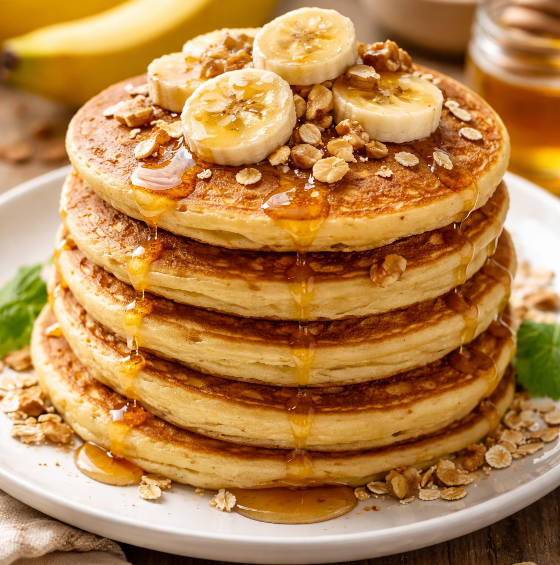

Panqueca fácil de banana
Uma receita rápida, barata e perfeita pro café da manhã

Ingredientes
- 1 banana
- 1 ovo
- 2 colheres de aveia
Modo de preparo
- Amasse a banana
- Misture tudo
- Asse na frigideira
Cozinhar bem não precisa ser difícil, só precisa ser fácil!
Uma receita rápida, barata e perfeita pro café da manhã
